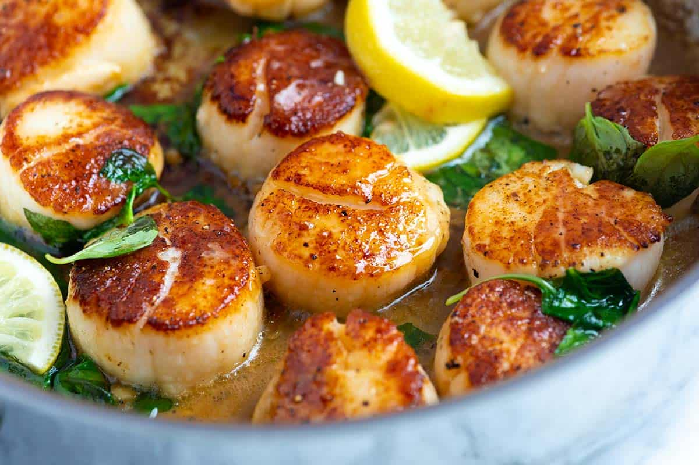

Seared Scallops

Description
Here's a story about these Seared Scallops. People really like reading about the life of the person behind each recipe.
Ingredients
- 12 large sea scallops, 1 1/4 to 1 1/2 pounds
- 2 teaspoons all-purpose flour, optional, see notes
- Salt and fresh ground black pepper
- 2 tablespoons oil, such as olive oil, avocado oil or grape seed oil
- 1 1/2 tablespoons butter
- 2 garlic cloves, minced
- 1 cup fresh basil leaves
- 3 to 4 lemon slices
Steps
- Use a paper towel to pat the scallops dry. Dust one side of the scallops with a small amount of flour, and then season with salt and pepper.
- Heat a wide skillet over medium-high heat. Add the oil to the pan. When the oil is hot and shimmery, carefully place the scallops, seasoned-side-down, into the pan. Cook, without moving them until browned, about 2 minutes.
- While the first side is browning, dust the unseasoned side of the scallops with a bit of flour and season them with salt and pepper.
- Flip the scallops — if any stick to the pan, wait a few more seconds then try again, gently wiggling them side to side to help release them.
- Add the butter and garlic to the pan, and then swirl the butter around the pan as it melts. Cook another minute or two then take the pan off of the heat. Stir in the basil leaves and lemon slices. Serve.